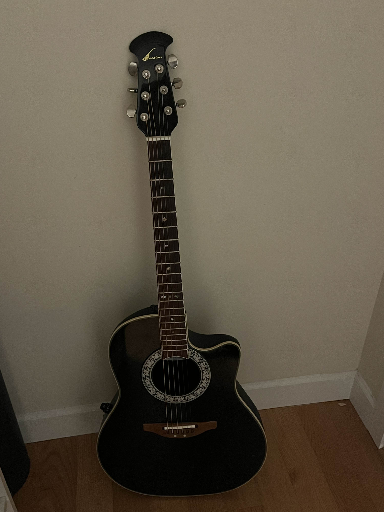

My name is Stanley, and I enjoy playing guitar, playing video games, hanging out with my friends, and listening to music. My favourite video game is Dark Souls and my favourite book is 1984 by George Orwell. I also enjoy coding, especially using code to make games. I mostly use C# and Javascript to code, but I also know a bit of Java and C++. Some things I would like to get better at are drawing and creative writing.
The reason that I chose Computer Studies 10 as my elective is that I enjoy coding, and I would like to enhance my programming skills. I started learning how to code through YouTube tutorials for Game Maker Studio. I also might pursue a career in coding in my later life, so I chose this course to help prepare myself for that. I find programming interesting because it allows us to create websites, games, and other types of programs which can serve a multitude of purposes, from entertainment to scientific simulations. Programming is also becoming a more important life skill at the moment, so learning to program is a worthy investment of anyone's time, in my opinion.
My other biggest interest, apart from coding, is music (writing + listening). I listen to bands like Modest Mouse, Radiohead, and Pink Floyd. These bands are some of my biggest inspirations musically. I am a guitar player, but I would also like to learn piano or violin. Some of my favourite songs of all time are Teeth Like God's Shoeshine by Modest Mouse and Dogs by Pink Floyd.

I, Stanley, fully acknowledge that all homepage files must be renamed to index.html. I have tested this website on https://tinyurl.com/cst10sites and will also do so with upcoming assignments. My code has been checked on https://validator.w3.org/ and has been corrected.